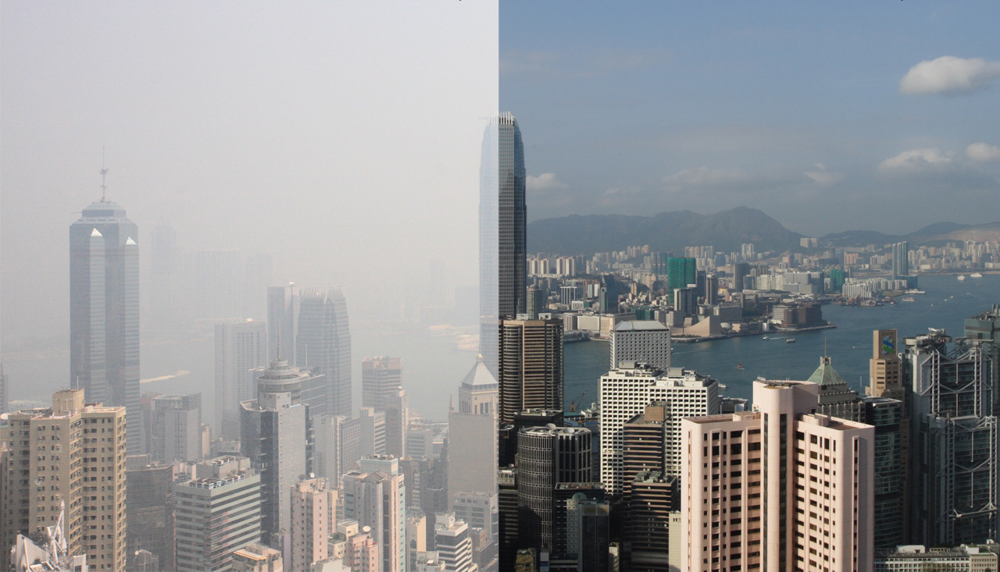
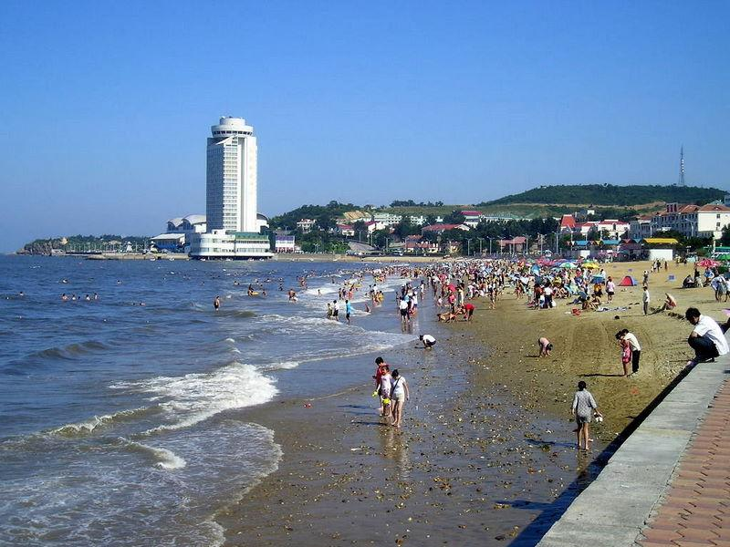

白偉良：
我們上個星期去了煙台來旅遊。旅遊在這兒的時候，發現煙台的環境很乾淨，天空也都是藍藍的！。我們找到對煙台的環境的一些方面：在煙台，空氣很乾淨，在路上沒有垃圾，沒有太多車，也有很多綠地。 在煙台，空氣很乾淨。天氣也很好的，在早上可能會十六到二十度，在中午可能會二十五到三十五度和在晚上會冷一點，所以一定要帶外套！在煙台，我們發現在路上我們從來沒見到垃圾。我們也採訪了些煙台人，他們都會說煙台在路或地上都沒有垃圾。這是因為煙台人會幫他們自己的環境，他們會自己撿起來丟。因為煙台沒有太多人，車不是呢麼多，所以天氣會比較乾淨和路上會比較安靜。綠地是煙台人最重要的方面在煙台。為什麼呢？因為煙台想要保護他們的綠地，所以他們可以有比較美麗的東西可以看，和空氣會比較好。 煙台很乾淨，很安靜和很美麗。這是因為煙台人好好保護了很多美麗的綠地，和他們不會用太多的温室气体，讓他們有比較乾淨的天氣。我覺得香港人一定要學煙台人做的樣子，因會在香港，有太多垃圾，空氣不太好和我們浪費很多東西。讓我們有一個比較不乾淨的環境。你呢？你覺得香港人要學的這個樣子嗎？

馨美：
煙台有一個非常美麗和健康的環境。煙台有很好的建築，很棒的海濱景觀，很棒的天氣和清新的空氣。也是一個現代化的城市，交通很方便，有很多大型的商場和買東西非常方便。 我在煙台的時候，不會在馬路上看到垃圾，很乾淨。我覺得比中國其他地方更乾淨。我注意到，在煙台有很多太陽能電池板為人們的家庭提供能量。這也讓他們的城市環境沒有污染。 當我在煙台的時候，我問了一個在那裡的學校的學生關於環境的問題。她有很多想法，她覺得汽車尾氣排放多會造成空氣污染。人們要多用公共交通工具少用私家車，還要多做宣傳，多植樹來保護環境。煙台人就是怎麼做的，他們會在路邊中很多樹，我們也跟他們一起種了很多樹。 我覺得煙台是一個非常乾淨的城市。雖然沒有香港那麼多的建築，但它仍然是一個非常好的地方。我認為煙台以外的人應該像我一樣，去體驗一下他們是如何保持城市清潔的。
權秀禧：
煙台和香港環境的對比 香港和煙台都是有六百多萬人口的沿海城市，但是煙台的土地面積比香港大五倍，所以煙台的人口密度比香港低很多。由此可見，香港的汽車數量也大於菸台，汽車排放的尾氣污染了空氣，空氣中有很多有害氣體和懸浮顆粒物(suspended particles)，影響了香港空氣質量，所以香港的空氣質量不如煙台。 另一方面，香港是全世界著名金融中心之一，有名的公司都願意在香港的高樓大廈外面放廣告燈牌，晚上也會開著廣告牌的燈，所以會有很多光污染。而煙台不是一個商業化的城市，所以煙台的光污染沒有香港那麼嚴重。 還有一種污染是海洋污染，煙台和香港都是港口城市，靠近海岸的娛樂活動、航運、捕魚業都會製造很多海洋垃圾，這些垃圾排放到海水里會造成海水的污染。 煙台政府希望通過制定法律法規來整治環境污染問題，而香港政府希望通過民眾和各方的努力來建設更美好的香港。